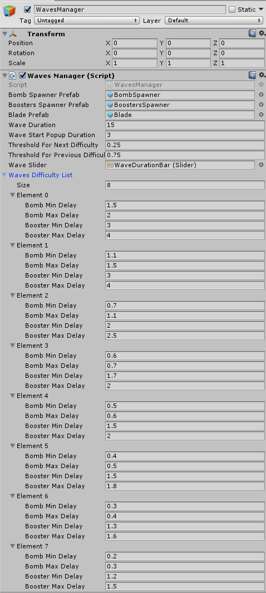

Making Of City Defense
Intro
CityDefense is a hyper-casual game, its mechanics are simple to understand and use and the game is self explanitory.
Waves of attacks threaten your city and your job is to defend it by slashing at the bombs.
Waves logic and structure
The GameManager manages the WavesManager and the WavesManager manages as is expected - the waves.
Every wave has its own level of difficulty that influences both the BombSpawner and the BoostersSpawner.
Both these spawners are updated and managed by the WavesManager.
The wave also manages the countdown time of the current wave and hold the logic to determine the difficulty of the next wave.

Pooling
Development challenges and code structure of CityDefense. CityDefense is A unity game based on the fruit ninja and tower defense.
Popups
Development challenges and code structure of CityDefense. CityDefense is A unity game based on the fruit ninja and tower defense.
Events and coupling
Development challenges and code structure of CityDefense. CityDefense is A unity game based on the fruit ninja and tower defense.